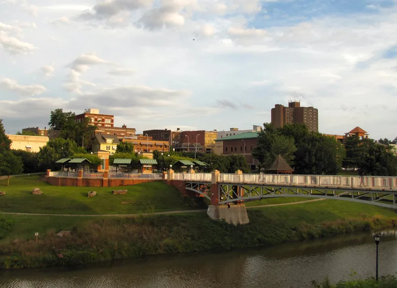

Maryville, TN
Roofing in Maryville and across Blount County
Maryville sits in the foothills with Chilhowee Mountain to the south. Storms come over the ridges fast, and the houses run from older homes near the college to subdivisions on the edge of town.

- Free roof inspections. We look, you decide.
- Written, line-by-line prices. Every part of the job on paper.
- $15,000 to $30,000. Most asphalt shingle replacements.
- Brands you know. See the products we install.
- 24-hour emergency line. Leaks and storm damage, any hour.
Maryville at a glance
- The seat of Blount County, with 31,907 people at the 2020 census.
- Home of Maryville College, which was founded in 1819.
- Chilhowee Mountain rises to the south, and Alcoa borders the city on the north.
Source: Wikipedia, Maryville, unless noted.
Older homes near the college
The houses around Maryville College and downtown tend to have steeper roofs, older decking and, now and then, more than one layer of shingles. A second layer doubles the tear-off. Old plank decking can be solid over one room and soft over the next, so ask for the cost of a replacement board in writing before work starts.
Chimneys, dormers and low porch roofs tied into a steep main roof get a close look on an older Maryville house, because the shingles are rarely the first thing to fail there.

Subdivisions on the edge of town
The subdivision homes around Maryville raise a different question: how old the shingles are, and what grade went on when the house was built. Curled edges, dark patches where granules have washed off, or a shingle or two in the yard after a windy night all mean the roof deserves a look.
Foothills weather
Being this close to the mountains means storms build quickly and come over the ridges with little warning. The damage often lands on the slope facing away from the street, so a roof can look fine from the front and still be missing shingles out back.

City or county permits
Which office's rules apply depends on whether your house is inside Maryville city limits or out in Blount County. The county posts its building permits month by month (blounttn.gov/1245/Monthly-Permit-Reports). Tell us the address and we'll find out which office it falls under.
Common questions
My house near the college has two layers of shingles. Do both come off?
Yes. On a replacement we take the roof down to the decking. Two layers can hide soft wood, and shingles nailed over an old layer don't lie as flat or hold as well in the wind. Stripping it also shows what the decking needs.
How soon should I call after a storm comes over the mountains?
If water is coming in, call (865) 830-8126 right away; emergency service runs 24 hours. If it's dry inside, you have a little time, but not a lot. A lifted shingle can hold for weeks and then let go in the next storm.
After a storm, should I call my insurance company or a roofer first?
Get a free inspection first. It tells you whether there's damage worth a claim. If there is, you file it with your insurer, since it's your claim, and we can document the damage, write a scope and meet the adjuster at the house. If there isn't, you've spent an hour and nothing else.
Do you pull the permit?
Yes. Inside Knoxville city limits a re-roof needs a city building permit and an inspection after tear-off. Farragut, Maryville, Oak Ridge and the counties set their own rules; Farragut, for example, says a plain re-roof usually doesn't need one. We check the rule for your address and pull the permit when one is needed.
Get a free look at your Maryville roof
Four boxes. We'll call you back to pick a time.
Rather talk? Call (865) 830-8126. Rather text? Send a photo.